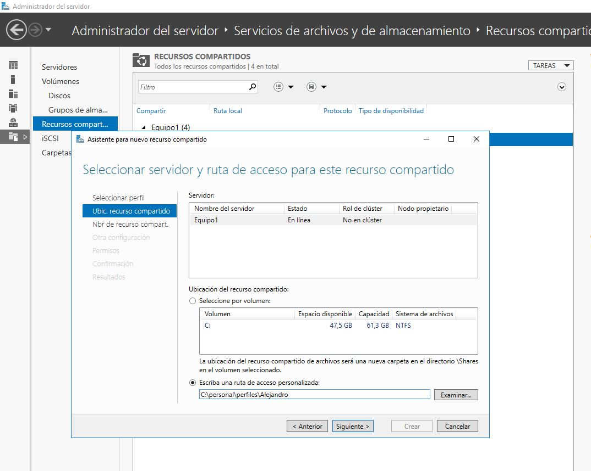
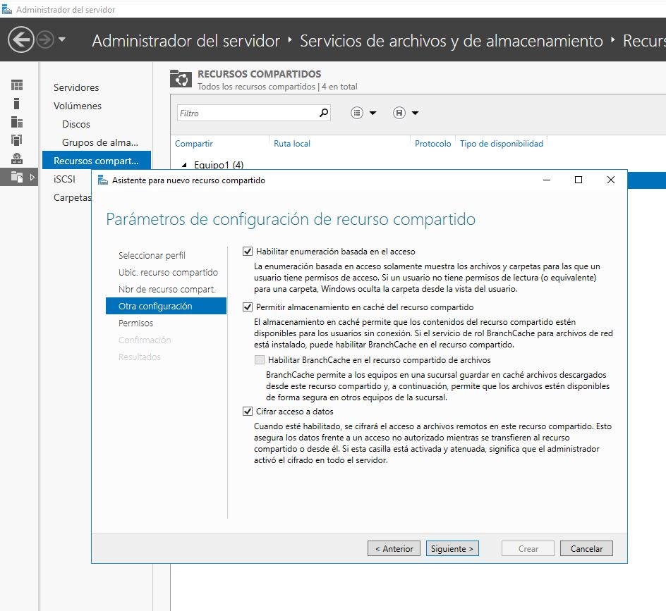
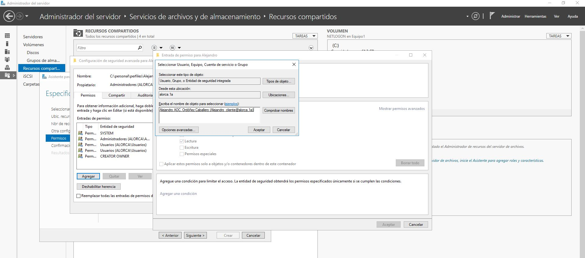
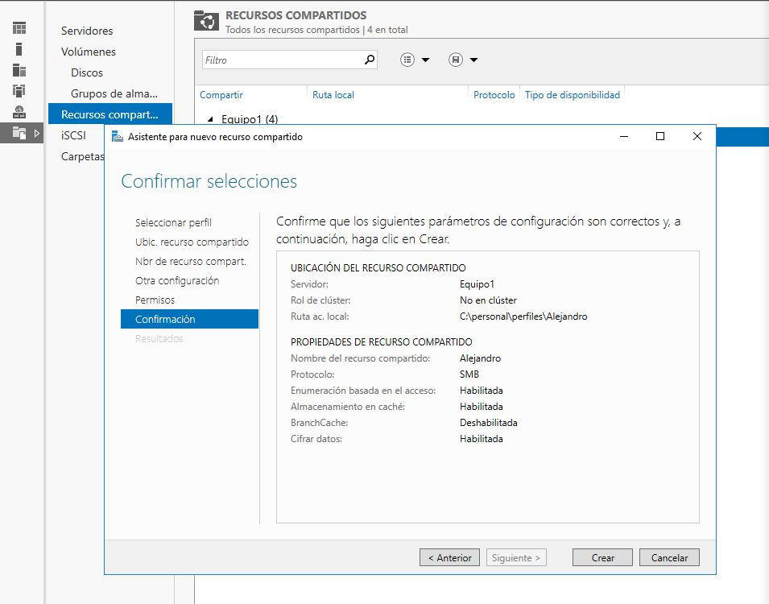
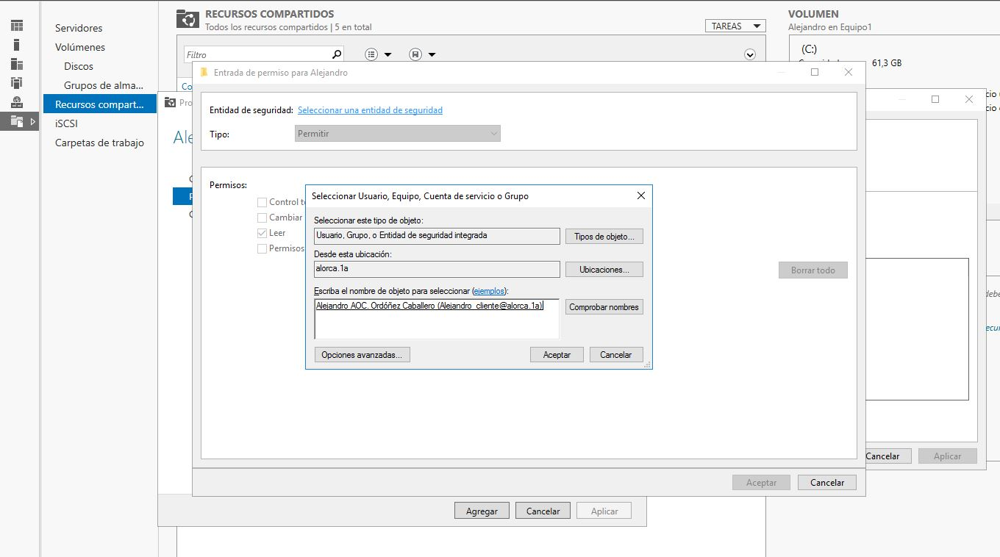
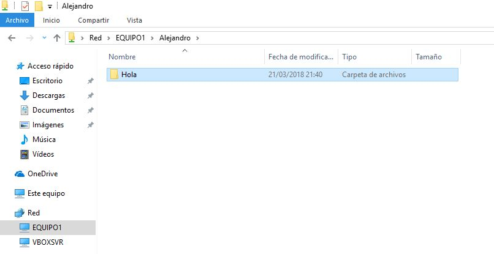
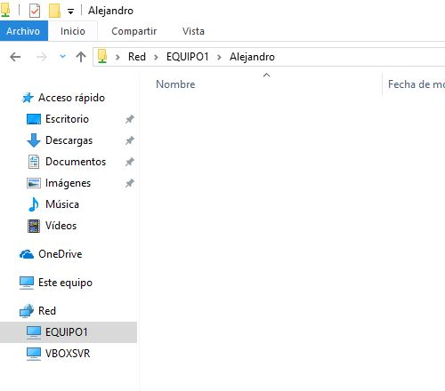

b.3) Administración de recursos locales y de red
Nos dirigimos a Administrador del servidor > Servicios de archivos y de almacenamiento > Recursos compartidos, una vez allí podemos agregar un nuevo recurso, modificarlo o eliminarlo.
Añadir un recurso
Hacemos click en TAREAS y luego en Nuevo recurso compartido..., nos aparecerá una nueva ventana, elegimos el tipo de recurso que vamos a añadir y luego le damos a siguiente, al darle siguiente nos preguntará la localización del recurso, para añadirla le damos a Escriba una ruta de acceso personalizada y le damos luego en Examinar... y elegimos la carpeta que queramos añadir.
Presionamos Siguiente y nos solicitará un nombre para el recurso, descripción y ruta remota, una vez configurado esa parte le damos a siguiente y nos pedirá los parámetros de configuración de recurso compartido, es recomendable marcar los tres checkboxs.
Le presionamos a Siguiente y nos preguntará los permisos, en este caso añadiremos al usuario Alejandro, para añadirlo le damos en Personalizar permisos..., luego en agregar y en Seleccionar una entidad de seguridad, escribimos el nombre y le damos a comprobar nombres y seleccionamos el usuario
Aceptamos y se habilitará los checksboxs, que previamente estaban bloqueados, en este caso le daremos todos los permisos, aceptamos y aplicamos. Nuevamente le damos a siguiente. Nos hará un breve resumen de lo que hemos hecho.
Editar un recurso
Para editar un recurso le hacemos click derecho en el recuros y propiedades, se nos abrirá una ventana con tres secciones General, Permisos y Configuración, vamos a añadir a Alejandro a la parte de compartir para que pueda acceder a la carpeta a través de la red, para ello le damos en Personalizar permisos... y luego en Compartir, clickeamos en agregar, seleccionar una entidad de seguridad, introducimos el nombre y comprobamos.
Al aceptar se habilitará las opciones, en este caso le ponemos control total y aceptamos.
IMPORTANTE
En el hipotético caso de que hubieramos puesto en compartir al usuario Alejandro con sólo lectura y en la sección de permisos "TOTAL", el dominio coge el más restringido que sería "LECTURA", aunque en la sección de compartir esté el grupo "Todos" con los permisos al máximo.
Eliminación de recurso
Para quitar un recurso es tan simple como de darle con click derecho al recurso y lo detenemos
Comprobaciones desde el ordenador cliente
Probaremos que tenemos acceso a la carpeta y en ella podemos crear archivos, modificarlos o eliminarlos, al usuario Alejandro se le ha asignado los permisos totales tanto en permisos como en compartir
 